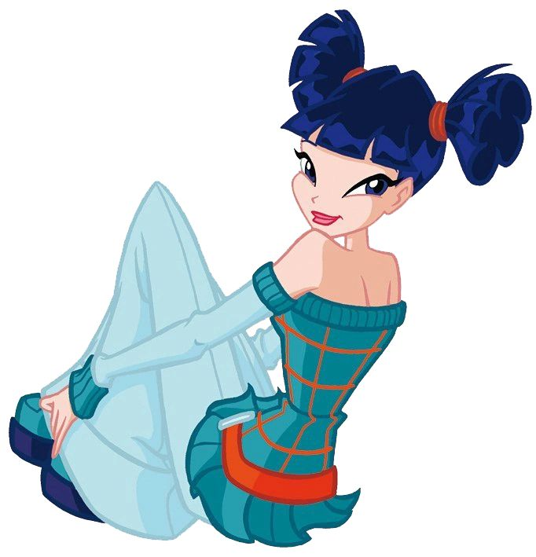
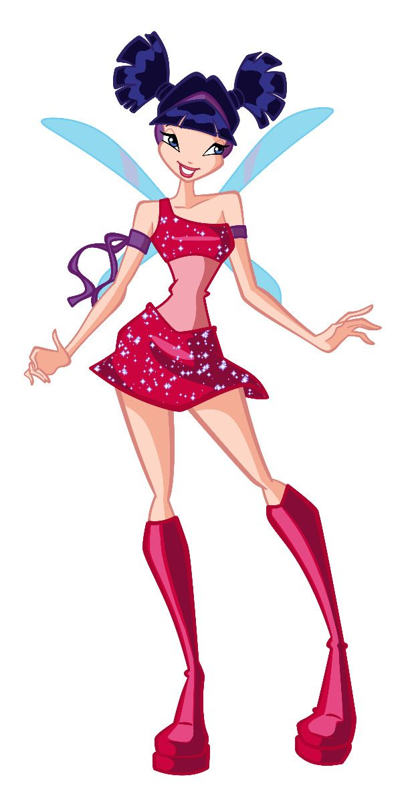
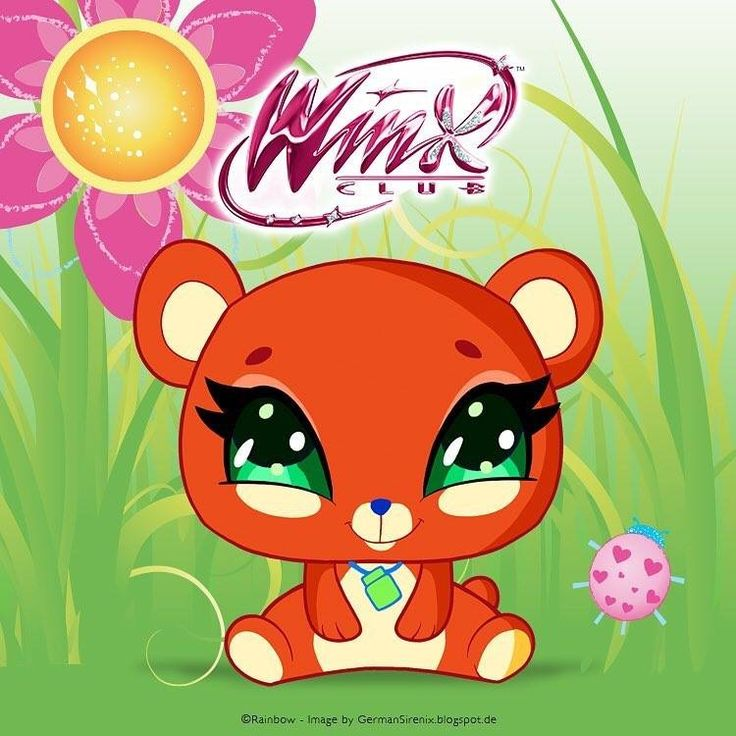

|
 |
 |
Musa é uma das protagonistas de O Clube das Winx e a Fada da Música. Ela é conhecida por sua personalidade apaixonada, independente, determinada e sensível. Seus poderes estão relacionados à música, aos sons e às vibrações, que ela utiliza em diferentes situações mágicas.
Musa nasceu no planeta Melody, um mundo conhecido por sua ligação com a música. Ela é filha de Ho-Boe, um músico, e de Matlin, que também era ligada ao universo musical.
Desde pequena, Musa desenvolveu uma grande paixão pela música. Entretanto, sua infância foi marcada pela perda de sua mãe, um acontecimento que influenciou sua personalidade e sua relação com os sentimentos.
Musa estudava na Escola de Fadas de Alfea quando conheceu Bloom, Stella, Flora e Tecna. Juntas, elas formaram o grupo que ficaria conhecido como Clube das Winx.
Ao longo de suas aventuras, Musa utiliza a música tanto como forma de expressão quanto como fonte de seus poderes mágicos. Ela também enfrenta desafios relacionados à amizade, ao amor e à confiança em si mesma.
Na sua primeira transformação, conhecida como Magic Winx, Musa manifesta os poderes da Música, utilizando sons e vibrações para criar feitiços e ataques mágicos.
Seus poderes permitem que ela manipule ondas sonoras, produza rajadas de energia e utilize diferentes frequências para enfrentar seus adversários.
• Controle do som: Musa consegue manipular sons e ondas sonoras por meio de sua magia.
• Ondas sonoras: pode lançar ataques mágicos utilizando vibrações e energia sonora.
• Rajadas musicais: utiliza sons e música para produzir efeitos mágicos contra seus adversários.
• Manipulação de vibrações: consegue utilizar vibrações sonoras em diferentes situações de combate.
• Sensibilidade musical: sua ligação com a música permite que ela perceba e utilize sons de maneira especial.
• Voo mágico: como fada, Musa pode voar utilizando suas asas mágicas.
Na transformação inicial, Musa apresenta cabelos curtos azul-escuros, geralmente presos em pequenos coques, asas delicadas em tons de azul e uma roupa característica composta por um top e uma saia curta em tons de vermelho e rosa, além de botas.
Seu visual combina com sua personalidade musical e independente, representando sua ligação com os sons e com o mundo da música.

Pepe é o patinho de estimação de Musa. Ele é um pequeno companheiro que aparece em momentos relacionados à vida das Winx e seus animais de estimação.
Pepe é querido por Musa e representa o lado carinhoso da fada, que demonstra afeto por seus amigos e animais.
Pepe é o animal de estimação de Musa e não deve ser confundido com os Fairy Animals, os animais mágicos associados às Winx em aventuras posteriores.
• Musa é a Fada da Música.
• Ela nasceu no planeta Melody.
• Sua mãe se chamava Matlin e seu pai é Ho-Boe.
• Seus poderes estão relacionados aos sons e às vibrações.
• É apaixonada por música e costuma expressar seus sentimentos por meio dela.
• Seu animal de estimação é o patinho Pepe.
• É uma das integrantes fundadoras do Clube das Winx.